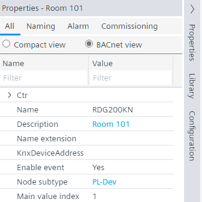
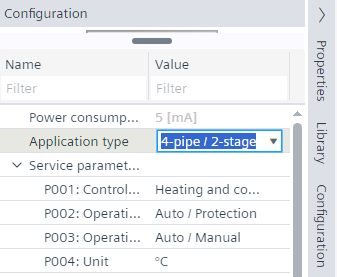
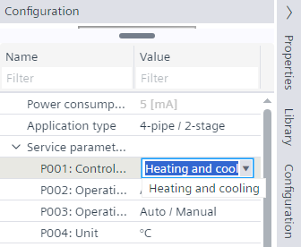

配置 RDG2 应用程序类型
- A RDG2 KNX PL-Link device was added.
- In the KNX PL-Link area, select the device.
- Select the Properties tab on the right.
- Modify the properties as required.

- Select the Configuration tab on the right.
- The Configuration view shows the properties of the selected device feature.
- In the Name column, select Application type.

- From the Application type drop-down list, select the application type.
- Configure the required properties in the Configuration view.
Note: Use the Name filter, for example, P001 or parameter name to display the parameter directly.
Service and expert level parameters